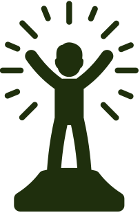

Leitura Descomplicada


Usuário
Leitura Descomplicada
Usuário
Sua jornada de leitura começa aqui
Parabéns por dar o primeiro passo! Aqui no Leitura Descomplicada, você encontrará inspiração e dicas práticas para transformar a leitura em um hábito prazeroso. Bem-vindo à sua nova jornada!
"Um livro é um sonho que você segura nas mãos."
-Neil Gaiman
Citações

Barack Obama
Ex-presidente dos Estados Unidos
A leitura é essencial. Ela nos dá a capacidade de ver o mundo através dos olhos dos outros e ajuda a construir a empatia que tanto precisamos.

Malala Yousafzai
Ativista, Prêmio Nobel da Paz
Uma criança, um professor, um livro e uma caneta podem mudar o mundo.

Bill Gates
Empresário e filantropo
Eu realmente tive muitos sonhos quando era criança, e acho que grande parte disso surgiu do fato de ter tido a chance de ler muito.
Oprah Winfrey
Figura influente da mídia global
O que eu sei com certeza é que a leitura te abre. Ela te expõe e te dá acesso a tudo que sua mente pode conter.
Comece a ler agora!
1.
5 Minutos por Dia: O Poder da Microleitura
A neurociência comprova que hábitos duradouros surgem de pequenas ações repetidas. No Leitura Descomplicada, recomendamos: Leia 1 parágrafo após o café da manhã - use o despertador do celular como lembrete. Com o tempo, seu cérebro associará o ritual matinal à leitura
2.
Conecte a Leitura à Sua Rotina Atual
Baseado no método Tiny Habitsde B.J. Fogg, propomos:"Após escovar os dentes à noite, leia 1 página do livro na cabeceira. A associação com um hábito automático aumenta a adesão em 43%"
3.
Prepare o Ambiente: Facilite o Foco na Leitura

Estudos da Universidade de Stanford mostram que espaços dedicados elevam a consistência:"Crie seu 'Canto Leitura': uma poltrona com iluminação quente + prateleira com 3 livros em destaque. O cérebro entende o contexto e entra no 'modo leitura' automaticamente"
4.
Avance 1% ao Dia: O Segredo do Progresso Contínuo
Dados do Journal of Educational Psychology indicam que melhorias incrementais evitam a desistência:"Aumente 1 página por dia - se hoje leu 10 páginas, amanhã meta 11. Em 3 meses, estará lendo 100 páginas sem esforço"
5.
Seu Gosto Importa: Equilibre Prazer e Descoberta
A pesquisa de Reima Al-Jarf com 1.200 leitores árabes revelou:"Siga a Regra 80/20: 80% do tempo com livros do seu interesse atual (autoajuda, ficção) + 20% para novos gêneros. Isso mantém o prazer enquanto expande horizontes"
6.
Transforme a Espera em Leitura: Tenha Livros à Mão
Dados do LifeHack mostram que 92% dos leitores regulares usam tempos mortos:"Kit Emergencial de Leitura: no celular, mantenha aberto o link do Leitura Descomplicada com contos curtos. Em filas ou esperas, leia 1 história ao invés de checar redes sociais"
Descubra tudo que o Leitura Descomplicada oferece!
Links rápidos

Sobre o projeto
•Desenvolvido por: Gabriel Furtado
•Instituição: São Paulo tech school
•Documentação
do projeto
© 2025 Leitura Descomplicada - Todos os direitos reservados Projeto acadêmico desenvolvido para o curso de Ciências da Computação